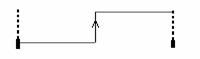
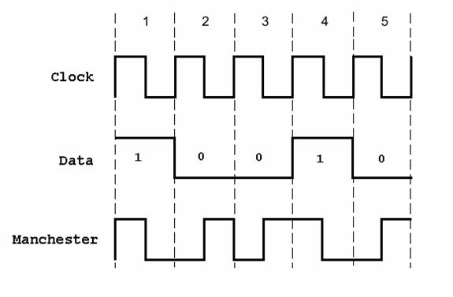
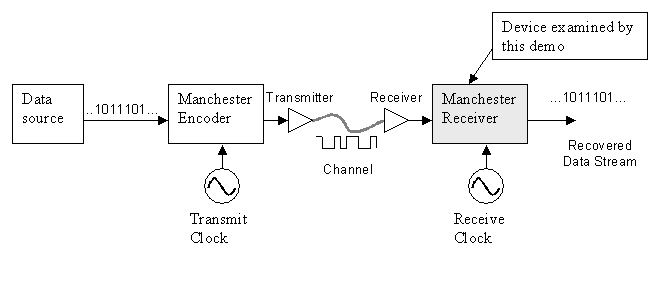
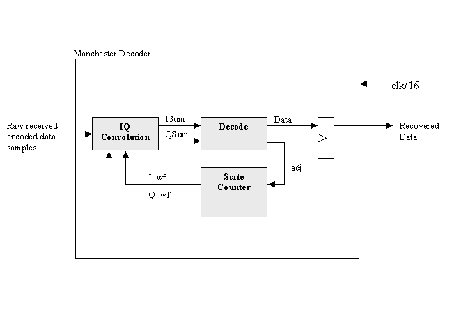
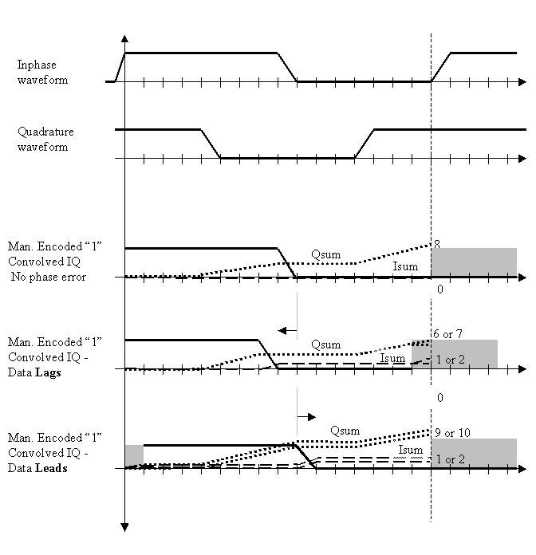
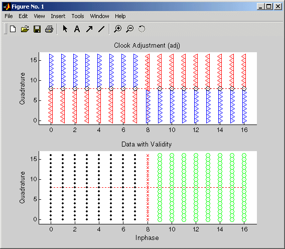
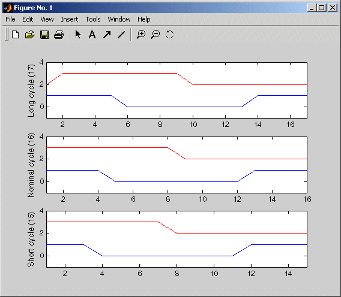

|
|
Bit Setting |
Transition |
Encoded Waveform |
|
1 |
1 to 0 |
|
|
0 |
0 to 1 |
 |
Transitions in the Manchester Encoding occur at the center and beginning of each bit. The transition at the center is defined by the bit value, while the transition at the beginning is dependent on the value of the previous bit. Consider the following diagram:

As the preceding
A device that receives the encoded bit stream is responsible for decoding the bit stream by separating the clock and data information. In most cases, the receiver must retrieve the original data stream by using only the encoded signal. This simplifies the communications channel, but means the receiver must overcome the following:

The Manchester Receiver demo validates the computations
performed by a Manchester Receiver device that is modeled in VHDL and
simulated in ModelSim. Numerous approaches are available for implementing a
The receiver over-samples the received data stream at 16 times the data rate. Thus, the receive clock must have a nominal period of 1/16th the data period. To compensate for minor differences between the transmitting and receiving clocks or drifts in the channel delay, the receiver adjusts its data period by up to one clock cycle (+/-) per data period. Thus, the receiver can use 15,16 or 17 clock cycles to recover the data encoded from the incoming sampled signal. For example, if the receiver clock is slightly faster then the transmitter clock (frequency error), the receive cycle occasionally needs to add an extra clock cycle to compensate.
Large sudden phase errors, such as those that occur at startup time, require multiple data periods to acquire a good lock on the signal. By limiting the maximum phase correction to 1/16th of the total data period, the receiver can be slow to correct large phase errors.
Decoding a received
A critical aspect of this design is the interpretation of the I/Q convolution values. At the end of a data receive cycle, the receiver translates the I/Q values into an estimate of the transmitted data and phase error. One way to present this information is to show these interpretations as plots versus measured I/Q values.
Data is considered invalid if the measured I and Q are completely ambiguous about the encoded data value.
In a similar way, you can generate an I/Q mapping of the
phase correction value in plot format.
Such a plot gives a visual representation of the decoding block. In practice, the details of this mapping
have strong impact on the stability and performance of the
In the ideal case where the receiver is perfectly locked to the incoming waveform, the receive cycle is 16 cycles long and the measured I/Q convolution values are fairly easy to interpret. However, data cycles that are 15 or 17 cycles long create some bias in the measurement of the IQ convolution. It is possible to customize the I/Q measurement during these cycles, but that would increase the size and complexity of the receiver. Instead, the data acquisition cycle is extended or shortened with no change in decoding the resulting values. However, this decoder bias can create problems with dithering or reduced noise immunity.
The focus of this demo is a VHDL implementation of a
Manchester Receiver. Decoding a
|
Samples the received signal and computes the convolution for the inphase (I) and quadrature (Q) waveforms. For each waveform, the computation is implemented as the sum of XOR operations on the sample and decoded waveform received from the state counter. |
|
|
Models a combinatorial circuit that interprets the results of the I/Q convolver. |
|
|
Generates the I/Q waveforms that are convolved with
received signals, taking into account phase errors (lags and leads), as
necessary. The phase of the I/Q generator is adjusted to match the incoming
|

The following timing diagram shows an inphase waveform, quadrature waveform, and the convolved results with no phase error, data lags, and data leads.

The demo includes three MATLAB M-functions that test the VHDL model. An M-function maps to each of the three VHDL components:
|
Verifies that the VHDL I/Q convolver code computes expected output for a randomly generated stream of samples. The M-function verifies this by computing the convolution for the inphase and quadrature waveforms (I_wf and Q_wf). The computation is implemented as an XOR and accumulation of the binary signals. |
|
|
Displays a plot of the I/Q mapping generated by the decoder for visual verification. |
|
|
Generates the inphase and quadrature waveforms. During test benching, this M-function has complete control of signals applied during the simulation, including clock generation, resets, and so on. |
To start the
>> cd(fullfile(matlabroot,
'toolbox','modelsim', 'modelsimdemos'))
>> manchestertutorial
The demo starts the MATLAB server, hdldaemon, such that it uses TCP socket communication with a socket port number identified as available by the operating system.
hdldaemon('socket',0)
The demo then calls hdldaemon with the ‘status’ option to get the assigned port number and store it in portnum for future reference.
dstat =
hdldaemon('status');
portnum
= dstat.portnum;
Both the server and client parts of an application link must use the same port number. Thus, at some point, the demo program needs to forward the portnum over to ModelSim.
The first component of the Manchester Receiver model to be tested is the decoder. The demo script
testisdone = 0;
disp(‘====================================================’);
disp(‘MATLAB testing of
disp(‘ Creates 2 plots of the transfer function of this entity’);
disp(‘ This test is simply a visualization of the decoder behavior’);
projectdir = pwd
unixprojectdir = strrep(projectdir,'\','/'); %ModelSim/Tcl always uses unix-style files
unixsrcfile = strrep(fullfile(matlabroot,'toolbox','modelsim','modelsimdemos','vhdl','manchester',
'decoder.vhd'),'\','/');
tclcmd = { ['cd ' unixprojectdir ],... % convert to unix style directory
'wm geometry . 500x200+0+0',... % Try moving ModelSim out of the way
'vlib work',... %create library (if necessary)
['vcom -performdefaultbinding ' unixsrcfile],...
'vsimmatlab work.decoder',...
['matlabtb decoder -mfunc Manchester_decoder -socket ',
num2str(portnum)],...
'run 3000',...
'quit -f'};
The following list defines each command:
· Changes to the writable project directory.
· Adjusts the placement of the ModelSim window so it does not obscure the MATLAB window.
· Creates the project library work if it does not already exist.
· Compiles the VHDL file. The demo script specifies the –performdefaultbinding option to enable default bindings in the event that they have been disabled in the modelsim.ini file.
· Loads an instance of the VHDL entity decoder for MATLAB test benching with the vsimmatlab command. This command is a Link for ModelSim extension to the ModelSim command set.
· Initiates a MATLAB test benching session for the loaded instance of entity decoder with the matlabtb command. This command is a Link for ModelSim extension to the ModelSim command set. The command in the demo specifies the entity instance, the MATLAB M-function that is to test the entity (manchester_decoder.m), and TCP socket communication with socket port portnum. For a link to be established between ModelSim and MATLAB, the value of portnum must match the socket port that was specified when the MATLAB server (hdldaemon) was started.
· Runs the ModelSim simulation for 3000 iterations of the current resolution limit. By default, the simulation runs for 3000 nanoseconds.
· Quits ModelSim without asking for confirmation.
vsim ('startfile','decoder.do', 'tclstart',tclcmd);
This command starts ModelSim with a Tcl command script that executes some general-purpose startup commands and then the user-defined commands specified with the ‘tclstart’ property. The ‘startfile’ property causes vsim to write the entire startup Tcl command script to decoder.do for future reference or use.
disp('Waiting for testing of ''decoder.vhd'' to complete (flag from
manchester_decoder.m indicates completion)');
while testisdone == 0,
pause(0.001);
end
pause(1);
disp('MATLAB test of decoder.vhd s complete! Check the generated plot for results.');
disp('Next, Hit any key to continue.');
pause;
The following plot figure appears and MATLAB waits for you to press any key on the keyboard to start the test bench for the next VHDL component.

With the input focus in the MATLAB window, press any keyboard key to start the test bench for the next VHDL component.
The first component of the Manchester Receiver model to be tested is the decoder. The demo script
testisdone = 0;
disp(‘====================================================’);
disp('MATLAB testing of
disp(' Checks isum and qsum outputs for a randomly generated')
disp(' stream of data samples')
projectdir = pwd
unixprojectdir = strrep(projectdir,'\','/'); %ModelSim/Tcl always uses unix-style files
unixsrcfile = strrep(fullfile(matlabroot,'toolbox','modelsim','modelsimdemos','vhdl','manchester',
'iqconv.vhd'),'\','/');
tclcmd = { ['cd ' unixprojectdir ],...
'wm geometry . 500x200+0+0',...
'vlib work',...
['vcom -performdefaultbinding ' unixsrcfile],...
'vsimmatlab work.iqconv',...
'force /iqconv/clk 1 0, 0 5 ns -repeat 10 ns ',...
'force /iqconv/enable 1',...
'force /iqconv/reset 1',... % reset before calling MATLAB
'run 100',...
['matlabtb iqconv -rising /iqconv/clk -mfunc Manchester_iqconv -socket ',num2str(portnum)],...
'run 1000',...
'quit -f'};
The following list defines each command:
· Changes to the writable project directory.
· Adjusts the placement of the ModelSim window so it does not obscure the MATLAB window.
· Creates the project library work if it does not already exist.
· Compiles the VHDL file. The demo script specifies the -performdefaultbinding option to enable default bindings in the event that they have been disabled in the modelsim.ini file.
· Loads an instance of the VHDL entity iqconv for MATLAB test benching with the vsimmatlab command. This command is a Link for ModelSim extension to the ModelSim command set.
· Applies the ModelSim force command to drive the entity’s clk, enable, and reset signals, which get passed on to the test bench as oport data. The first force command specifies that clk is to be set to 1 at time equals 0, to 0 after 5 nanoseconds, and repeat the high-to-low cycle every 10 nanoseconds. The second and third force commands set the enable and reset signals to 1.
· Runs the ModelSim simulation for 100 iterations of the current limit. By default, the simulation runs for 100 nanoseconds. This accounts for the startup phase.
· Initiates a MATLAB test benching session for the loaded instance of entity iqconv with the matlabtb command. This command is a Link for ModelSim extension to the ModelSim command set. The command in the demo specifies the entity instance iqconv, the event that triggers an invocation of the MATLAB M-function, the M-function that is to test the entity (manchester_iqconv.m), and TCP socket communication with socket port portnum. The -rising option specifies that the M-function be called when clk experiences a rising edge. For a link to be established between ModelSim and MATLAB, the value specified with -socket must match the socket port that was specified when the MATLAB server (hdldaemon) was started.
· Runs the ModelSim simulation for 1000 iterations of the current resolution limit. By default, the simulation runs for 1000 nanoseconds.
· Quits ModelSim without asking for confirmation.
vsim ('startfile','iqconv.do', 'tclstart',tclcmd);
This command starts ModelSim with a Tcl command script that executes some general-purpose startup commands and then the user-defined commands specified with the ‘tclstart’ property. The ‘startfile’ property causes vsim to write the entire startup Tcl command script to iqconv.do for future reference or use.
while testisdone == 0,
pause(0.001);
end
pause(1);
disp('Test of iqconv.vhd complete (If it failed, there would be an error message printed above)! .');
disp('Next, Hit any key to continue.');
pause;
MATLAB waits for you to press any key on the keyboard to start the test bench for the next VHDL component.
With the input focus in the MATLAB window, press any keyboard key to start the test bench for the next VHDL component.
The first component of the Manchester Receiver model to be tested is the decoder. The demo script
testisdone = 0;
disp(‘====================================================’);
disp('MATLAB testing of
disp(' Creates and checks isum and qsum outputs for a randomly generated')
disp(' stream of data samples')
projectdir = pwd
unixprojectdir = strrep(projectdir,'\','/'); %ModelSim/Tcl always uses unix-style files
unixsrcfile = strrep(fullfile(matlabroot,'toolbox','modelsim','modelsimdemos','vhdl','manchester',
'statecnt.vhd'),'\','/');
tclcmd = { ['cd ' unixprojectdir ],...
'wm geometry . 500x200+0+0',...
'vlib work',...
['vcom -performdefaultbinding ' unixsrcfile],...
'vsimmatlab -t 1ns work.statecnt ',...
'force /statecnt/clk 1 0, 0 5 ns -repeat 10 ns ',...
['matlabtb statecnt -mfunc Manchester_statecnt -socket ',num2str(portnum)],...
'run 30000',...
'quit -f'};
The following list defines each command:
· Changes to the writable project directory.
· Adjusts the placement of the ModelSim window so it does not obscure the MATLAB window.
· Creates the project library work if it does not already exist.
· Compiles the VHDL file. The demo script specifies the -performdefaultbinding option to enable default bindings in the event that they have been disabled in the modelsim.ini file.
· Loads an instance of the VHDL entity statecnt for MATLAB test benching with the vsimmatlab command. This command is a Link for ModelSim extension to the ModelSim command set. The -t option specifies a ModelSim simulator time resolution of 1 nanosecond (the default).
· Applies the ModelSim force command to drive the entity’s clk signal, which gets passed on to the test bench as oport data. The force command specifies that clk is to be set to 1 at time equals 0, to 0 after 5 nanoseconds, and repeat the high-to-low cycle every 10 nanoseconds.
· Initiates a MATLAB test benching session for the loaded instance of entity statecnt with the matlabtb command. This command is a Link for ModelSim extension to the ModelSim command set. The command in the demo specifies the entity instance statecnt, the M-function that is to test the entity (manchester_statecnt.m), and TCP socket communication with socket port portnum. For a link to be established between ModelSim and MATLAB, the value specified with -socket must match the socket port that was specified when the MATLAB server (hdldaemon) was started.
· Runs the ModelSim simulation for 30000 iterations of the current resolution limit. By default, the simulation runs for 30000 nanoseconds.
· Quits ModelSim without asking for confirmation.
vsim ('startfile','statecnt.do', 'tclstart',tclcmd);
This command starts ModelSim with a Tcl command script that executes some general-purpose startup commands and then the user-defined commands specified with the ‘tclstart’ property. The ‘startfile’ property causes vsim to write the entire startup Tcl command script to statecnt.do for future reference or use.
while testisdone == 0,
pause(0.001);
end
pause(1);
disp('Test of statecnt.vhd complete (Examine plot produced) .');
disp('Next, Hit any key to continue.');
pause;
The following plot figure appears and MATLAB waits for you to press any key on the keyboard to start the test bench for the next VHDL component.

With the input focus in the MATLAB window, press any keyboard key to start the test bench for the next VHDL component.